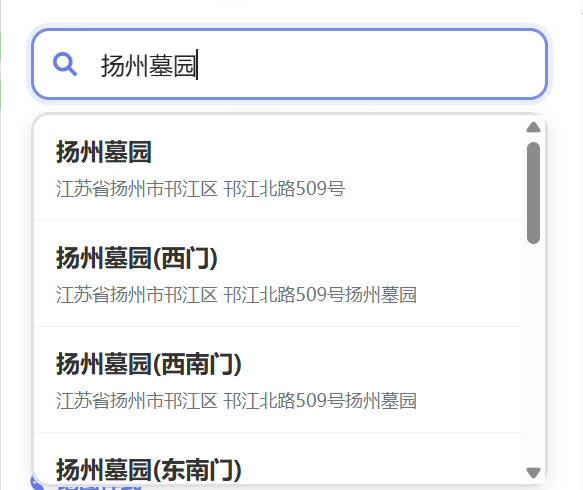
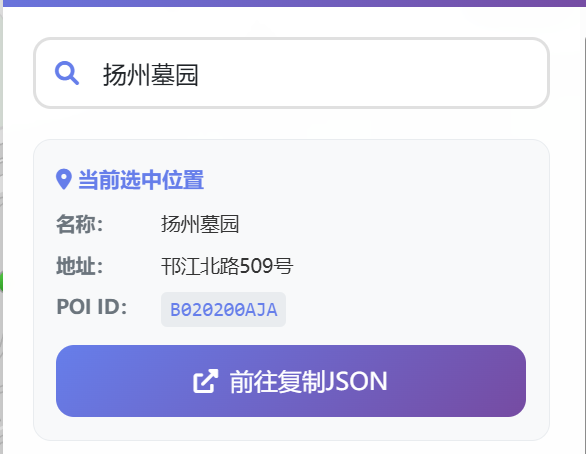
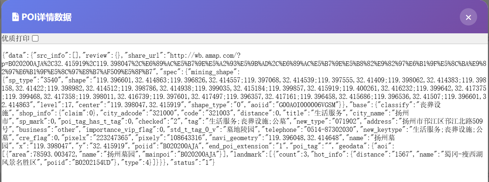
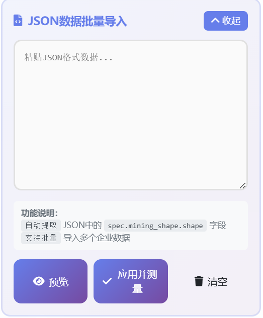
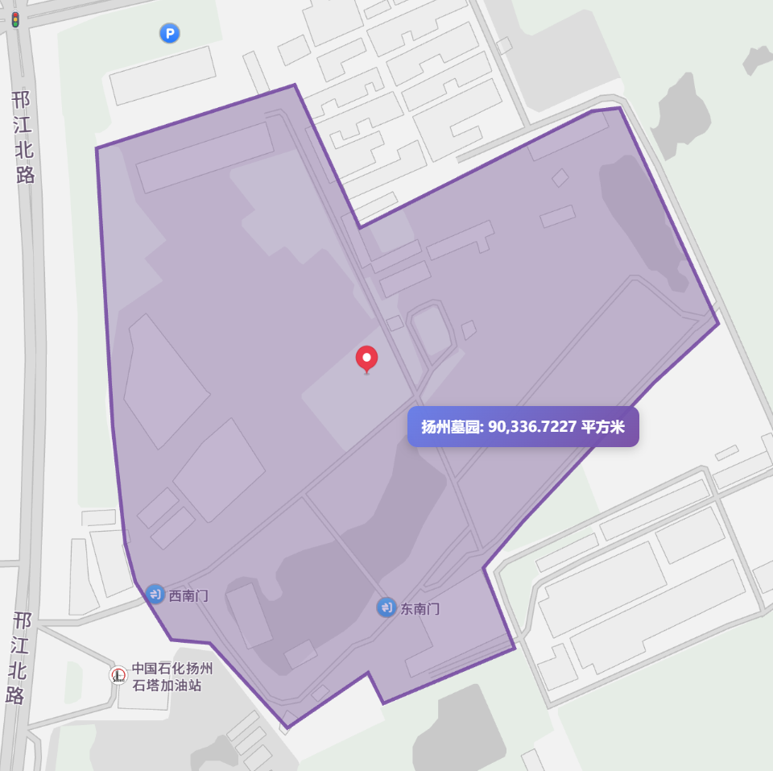
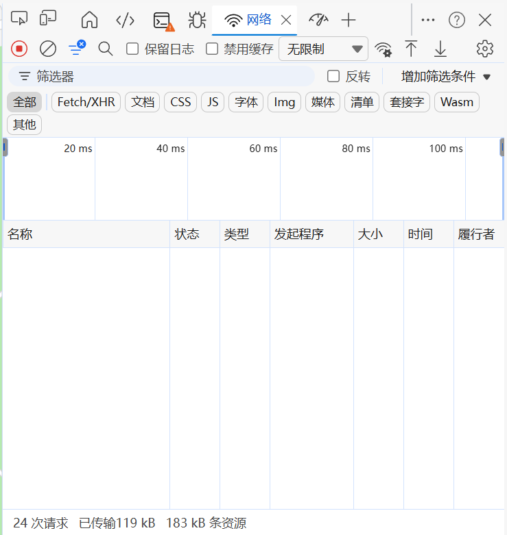
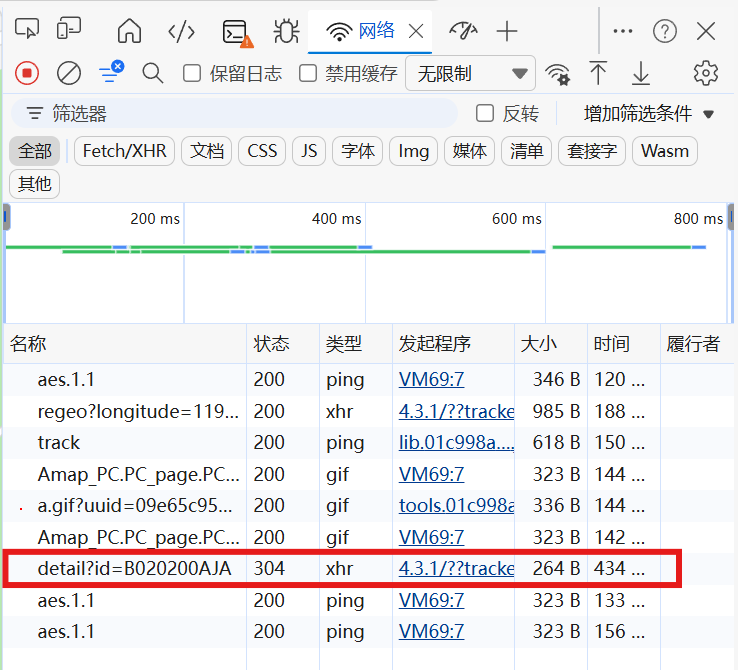
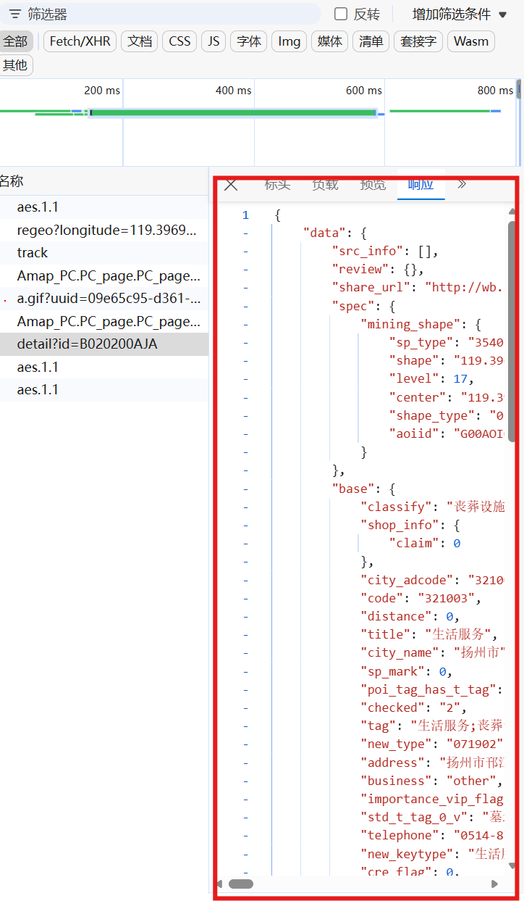

系统概述
土地面积测量工具是专为税务部门设计的高精度地理信息系统解决方案。系统集成高德地图API 2.0，提供多模式面积测量、批量数据导入导出、历史记录管理等专业功能，助力土地税收征管工作数字化转型。
多源数据导入
支持JSON格式批量导入、经纬度坐标直接输入、地图手动绘制三种数据采集方式
智能地址搜索
集成高德地图POI搜索，快速定位目标地块，支持企业名称和地址模糊匹配
多单位换算
实时计算面积，支持平方米、亩、公顷、平方千米四种计量单位自由切换
快速入门
本章节将引导您在5分钟内完成系统的基础配置与首次测量操作。
环境要求
| 项目 | 要求 | 说明 |
|---|---|---|
| 浏览器 | Chrome 90+ / Firefox 88+ / Edge 90+ | 推荐使用Chrome以获得最佳体验 |
| 网络 | 需访问高德地图API服务器 | 确保网络畅通，建议带宽10Mbps以上 |
| 分辨率 | 最低1366x768，推荐1920x1080 | 支持响应式布局，移动端可正常使用 |
自动获取面积
系统支持通过高德地图获取地块边界数据，自动解析地址并计算面积。本节介绍两种获取数据的方法。
方法一：使用内置地址搜索（推荐）
此方法适用于新打开的详情页面可以正常访问的情况。
搜索地址
在系统顶部的搜索框内输入目标地址或企业名称。

选定地址
在弹出的搜索提示列表中，点击选择目标地址。

复制JSON数据
点击搜索结果中的"前往复制JSON"按钮，系统将新打开高德地图详情页面。

粘贴数据
在新打开的页面中，复制全部内容（Ctrl+A 全选，Ctrl+C 复制）。

批量导入
返回系统主界面，将复制的数据粘贴到"JSON数据批量导入"框内。

应用并测量
点击"应用并测量"按钮，系统自动解析地址数据，在地图上标注地块边界，并实时计算面积。

方法二：手动获取高德数据（备选方案）
此方法适用于新打开的高德详情页面被浏览器安全策略限制的情况。
适用场景
当点击"前往复制JSON"按钮后，新页面被浏览器阻止或显示拒绝访问时，请使用此方法手动获取数据。
打开高德地图
在浏览器中打开高德地图官网。

搜索目标地址
在高德地图搜索框中输入想要查询的地址或企业名称。

打开开发者工具
按F12键或右键点击页面选择"检查"，打开浏览器开发者工具。

切换到网络标签
在开发者工具中点击"网络"（Network）标签，勾选"XHR"筛选器。

查找请求
在搜索结果列表中点击目标地址，刷新网络请求，找到包含"DETAIL"字样的网络标签。

复制响应数据
点击该请求标签，切换到"响应"（Response）面板，复制全部内容。

批量导入并测量
将复制的响应数据粘贴到系统的"JSON数据批量导入"框内，点击"应用并测量"即可计算面积。
API参考
本文档列出了系统中使用的所有高德地图JavaScript API 2.0接口，按照功能模块分类整理。每个API均标注了在本项目中的具体用途。
版本说明
本项目基于高德地图 JS API 2.0 开发，部分接口与1.x版本不兼容。开发时需注意API Key的安全配置。
一、核心类 Core
地图对象是最核心的类，用于创建并控制地图实例。
| API接口 | 类型 | 功能说明 |
|---|---|---|
new AMap.Map(container, options) |
构造函数 | 创建地图实例。项目中用于初始化地图，设置了zoom（缩放级别）、center（中心点）、mapStyle（地图样式）等参数。 |
map.on(eventName, handler) |
方法 | 注册事件监听器。项目中监听 'complete' 事件，在地图加载完成后初始化插件模块。 |
map.setZoom(level) |
方法 | 设置地图缩放级别。在搜索定位功能中，将地图缩放到17级以便清晰查看地块。 |
map.setCenter(position) |
方法 | 设置地图中心点。配合搜索功能，将地图中心移动到目标位置。 |
map.setFitView(overlays) |
方法 | 调整视野以适应覆盖物范围。在绘制完成、数据导入后自动调整视野，确保所有区域可见。 |
map.setMapStyle(style) |
方法 | 设置地图样式。实现11种地图样式的动态切换功能（标准、深色、卫星等）。 |
map.add(overlay) |
方法 | 添加覆盖物到地图。用于添加多边形、标记点、文本标签等。 |
map.remove(overlay) |
方法 | 从地图移除覆盖物。用于删除测量区域或清除预览标记。 |
// 初始化地图（项目源码） var map = new AMap.Map("container", { resizeEnable: true, zoom: 12, center: [119.398015, 32.377528], // 扬州市邗江区 mapStyle: "amap://styles/light" }); // 监听地图加载完成事件 map.on('complete', function() { initializePlugins(); });
经纬度坐标对象，用于表示地图上的一个点。
| API接口 | 类型 | 功能说明 |
|---|---|---|
new AMap.LngLat(lng, lat) |
构造函数 | 构造经纬度对象。在面积计算时，将坐标数组转换为LngLat对象数组。 |
// 坐标转换用于面积计算 const path = coords.map(c => new AMap.LngLat(c[0], c[1])); const area = AMap.GeometryUtil.ringArea(path);
像素坐标对象，用于设置覆盖物的偏移位置。
| API接口 | 类型 | 功能说明 |
|---|---|---|
new AMap.Pixel(x, y) |
构造函数 | 构造像素坐标。在创建预览标记点时，设置标记相对于锚点的偏移量。 |
// 创建带偏移的标记点 const marker = new AMap.Marker({ position: coord, content: `<div class="preview-marker">${index + 1}</div>`, offset: new AMap.Pixel(-20, -10), // 偏移定位 zIndex: 100 });
二、覆盖物类
多边形覆盖物，用于在地图上绘制闭合区域，是本系统的核心可视化组件。
| API接口 | 类型 | 功能说明 |
|---|---|---|
new AMap.Polygon(options) |
构造函数 | 创建多边形。设置path（路径）、strokeColor（边框颜色）、fillColor（填充色）、extData（自定义数据）等属性。 |
polygon.getPath() |
方法 | 获取多边形路径坐标。在保存数据时导出坐标数组，在计算面积时获取路径。 |
polygon.getBounds() |
方法 | 获取多边形边界范围。用于计算多边形的中心点，以便放置文本标签。 |
polygon.setOptions(options) |
方法 | 修改多边形属性。在高亮显示区域时，动态修改边框粗细和填充透明度。 |
polygon.getExtData() |
方法 | 获取自定义数据。存储区域ID，用于关联历史记录和进行删除、高亮等操作。 |
// 创建测量区域多边形（项目源码） const polygon = new AMap.Polygon({ path: path, // 经纬度数组 strokeColor: color, // 边框颜色 strokeOpacity: 0.9, // 边框透明度 strokeWeight: 3, // 边框宽度 fillColor: color, // 填充颜色 fillOpacity: 0.3, // 填充透明度 extData: { // 自定义数据 id: Date.now(), source: 'draw' } }); // 高亮显示区域 function highlightRegion(id) { const polygon = polygons.find(p => p.getExtData().id === id); if (polygon) { polygon.setOptions({ strokeWeight: 5, fillOpacity: 0.5 }); } }
点标记用于在地图上标注位置，项目中用于坐标预览功能。
| API接口 | 类型 | 功能说明 |
|---|---|---|
new AMap.Marker(options) |
构造函数 | 创建点标记。在经纬度预览时，为每个坐标点创建带序号的标记。 |
// 经纬度预览标记 coords.forEach((coord, index) => { const marker = new AMap.Marker({ position: coord, content: `<div class="preview-marker">${index + 1}</div>`, offset: new AMap.Pixel(-20, -10), zIndex: 100 }); previewMarkers.push(marker); map.add(marker); });
文本标记用于在地图上显示文字信息，项目中用于显示区域名称和面积。
| API接口 | 类型 | 功能说明 |
|---|---|---|
new AMap.Text(options) |
构造函数 | 创建文本标记。设置text（文本内容）、position（位置）、style（样式）等属性。 |
text.setText(content) |
方法 | 更新文本内容。在切换单位时更新面积显示文本。 |
// 在多边形中心添加面积标签 function addAreaMarker(polygon, areaSqm, name) { const text = new AMap.Text({ text: `${name}: ${formatArea(areaSqm, currentUnit)}`, position: polygon.getBounds().getCenter(), style: { 'background': 'linear-gradient(135deg, rgba(102, 126, 234, 0.95) 0%, rgba(118, 75, 162, 0.95) 100%)', 'border': 'none', 'color': 'white', 'padding': '8px 12px', 'border-radius': '8px', 'font-size': '12px', 'font-weight': '600' }, extData: { polygonId: polygon.getExtData().id, areaSqm: areaSqm } }); markers.push(text); map.add(text); }
三、插件服务类 Plugin
插件加载方法，用于按需加载高德地图的功能模块。
| API接口 | 类型 | 功能说明 |
|---|---|---|
AMap.plugin(plugins, callback) |
静态方法 | 加载指定插件。项目中一次性加载 PlaceSearch、AutoComplete、MouseTool、GeometryUtil 四个插件。 |
// 初始化插件（项目源码） function initializePlugins() { AMap.plugin([ 'AMap.PlaceSearch', // POI搜索 'AMap.AutoComplete', // 输入提示 'AMap.MouseTool', // 鼠标工具 'AMap.GeometryUtil' // 几何计算 ], function() { // 初始化各插件实例... }); }
地点搜索服务，用于根据关键词搜索POI信息。
| API接口 | 类型 | 功能说明 |
|---|---|---|
new AMap.PlaceSearch(options) |
构造函数 | 创建搜索实例。配置map（关联地图）、pageSize（结果数量）等参数。 |
placeSearch.setCity(adcode) |
方法 | 设置搜索城市区域。根据用户选择的城市行政区划代码限定搜索范围。 |
placeSearch.search(keyword, callback) |
方法 | 执行地点搜索。在用户选择自动完成提示后，执行精确搜索获取POI详情。 |
// 初始化搜索服务 placeSearch = new AMap.PlaceSearch({ map: map, pageSize: 5 }); // 执行搜索并定位 function handleSearchSelect(e) { placeSearch.setCity(e.poi.adcode); placeSearch.search(e.poi.name, (status, result) => { if (status === 'complete' && result.poiList.pois.length > 0) { const poi = result.poiList.pois[0]; map.setZoom(17); map.setCenter(poi.location); } }); }
输入提示服务，用于实现搜索框的关键词联想功能。
| API接口 | 类型 | 功能说明 |
|---|---|---|
new AMap.AutoComplete(options) |
构造函数 | 创建自动完成实例。绑定input（输入框DOM）、city（默认城市）、citylimit（是否限制城市）等参数。 |
autoComplete.search(keyword, callback) |
方法 | 根据输入关键字查询提示词。在输入框input事件中触发，获取匹配的地址列表。 |
autoComplete.on(event, handler) |
方法 | 监听选择事件。监听 'select' 事件，获取用户选择的提示项。 |
// 初始化自动完成 autoComplete = new AMap.AutoComplete({ input: "tipinput", city: "扬州", citylimit: true }); // 监听选择事件 autoComplete.on("select", handleSearchSelect); // 手动触发搜索（项目中的自定义实现） function handleSearchInput(e) { const keyword = e.target.value.trim(); if (keyword.length < 2) return; autoComplete.search(keyword, (status, result) => { if (status === 'complete' && result.tips) { // 渲染搜索结果下拉列表... } }); }
鼠标绘图工具，提供在地图上绘制覆盖物的交互能力。
| API接口 | 类型 | 功能说明 |
|---|---|---|
new AMap.MouseTool(map) |
构造函数 | 创建鼠标工具实例。绑定到当前地图对象。 |
mouseTool.polygon(options) |
方法 | 开启多边形绘制模式。用户点击地图添加顶点，双击完成绘制。 |
mouseTool.close(clear) |
方法 | 关闭绘图模式。参数为true时同时清除正在绘制的图形。 |
mouseTool.on(event, handler) |
方法 | 监听绘图事件。监听 'draw' 事件，在绘制完成时获取生成的多边形对象。 |
// 初始化鼠标工具 mouseTool = new AMap.MouseTool(map); // 开始绘制 function startDrawing() { const color = regionColors[regionCounter % regionColors.length]; mouseTool.polygon({ strokeColor: color, strokeOpacity: 0.9, strokeWeight: 3, fillColor: color, fillOpacity: 0.3, extData: { id: Date.now(), source: 'draw' } }); } // 监听绘制完成 mouseTool.on('draw', function(event) { const polygon = event.obj; mouseTool.close(); // 处理绘制结果... });
几何计算工具类，提供空间运算能力。
| API接口 | 类型 | 功能说明 |
|---|---|---|
AMap.GeometryUtil.ringArea(ring) |
静态方法 | 计算闭合多边形的面积。接收LngLat对象数组，返回平方米单位的面积值。这是系统的核心计算方法。 |
坐标要求
该方法需要传入 LngLat 对象数组，而非普通坐标数组。使用前需进行类型转换。
// 计算多边形面积（项目核心代码） const path = coords.map(c => new AMap.LngLat(c[0], c[1])); const area = AMap.GeometryUtil.ringArea(path); // 单位换算 function convertArea(areaSqm, unit) { switch(unit) { case 'mu': return areaSqm * 0.0015; // 亩 case 'hectare': return areaSqm / 10000; // 公顷 case 'sqkm': return areaSqm / 1000000; // 平方千米 default: return areaSqm; // 平方米 } }
四、事件系统 Event
高德地图API采用事件驱动模式，项目中使用了以下核心事件：
| 事件名称 | 触发对象 | 功能说明 |
|---|---|---|
'complete' |
AMap.Map | 地图资源加载完成。触发后初始化插件模块，隐藏加载遮罩。 |
'draw' |
AMap.MouseTool | 绘制完成。获取用户绘制的多边形对象，计算面积并保存记录。 |
'select' |
AMap.AutoComplete | 选择提示项。用户从搜索建议列表中选择一个结果。 |
五、API使用汇总
// 系统使用的高德地图API完整清单 核心类: - AMap.Map // 地图实例 - AMap.LngLat // 经纬度坐标 - AMap.Pixel // 像素坐标 覆盖物类: - AMap.Polygon // 多边形（核心：测量区域） - AMap.Marker // 点标记（预览功能） - AMap.Text // 文本标记（面积标签） 插件服务: - AMap.plugin // 插件加载器 - AMap.PlaceSearch // POI搜索 - AMap.AutoComplete // 输入提示 - AMap.MouseTool // 鼠标绘图 - AMap.GeometryUtil // 几何计算（ringArea方法） 事件: - complete // 地图加载完成 - draw // 绘制完成 - select // 选择提示项
系统架构
技术栈
| 层级 | 技术 | 版本 |
|---|---|---|
| UI框架 | Bootstrap | 5.3.0-alpha1 |
| 地图引擎 | 高德地图JS API | 2.0 |
| 图标库 | Font Awesome | 6.0.0 |
| 逻辑层 | Vanilla JavaScript | ES6+ |
数据结构
historyItem 对象
interface HistoryItem { id: number; // 唯一标识符 name: string; // 区域名称 areaSqm: number; // 面积（平方米） remark: string; // 备注信息 color: string; // 显示颜色 coords: number[][]; // 坐标点数组 source: string; // 数据来源: draw | json | coords }
常见问题
请检查以下项目：
- 确认网络连接正常，可访问外网
- 清除浏览器缓存后刷新页面
- 尝试切换至其他地图样式
- 检查是否被企业防火墙拦截
可能原因：
- 绘制边界不精确 - 放大地图后仔细核对各顶点位置
- 坐标系差异 - 高德地图使用GCJ-02坐标系，与GPS坐标存在偏移
- 地形因素 - 系统计算投影面积，未考虑地形起伏